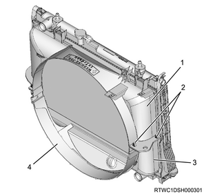
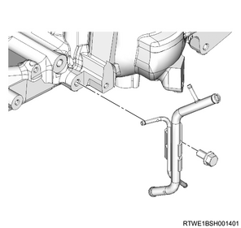
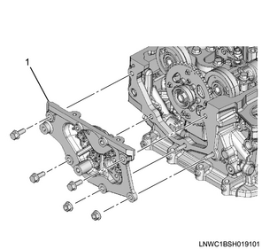
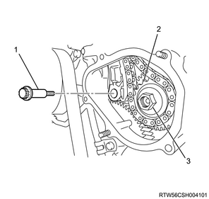
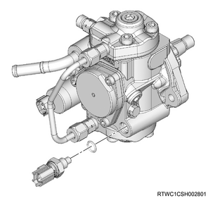

Fuel temperature sensor removal (4JJ1)
1. Injector safety information
Caution
- The holes and gaps constituting the fuel paths for the fuel system, including the inside of the injector, have an extremely precise finish. Therefore, entry of any foreign material may cause trouble.
- Be very careful to prevent entry of foreign material after removing parts, etc.
2. Battery ground cable disconnect
1. Open the engine hood assembly.
2. Disconnect the battery ground cable from the battery.
Caution
- Do not disconnect within 1 minute after turning OFF the ignition switch.
3. Raise vehicle using the jack.
3. Underguard removal
Note
- The following applies to models with an under air deflector.
1. Remove the under air deflector from the frame.
Note
- Remove the 5 bolts and clip.

- Bolt
- Clip
Note
- The following applies to models with front and rear underguard.
2. Remove the front underguard from the frame.
Note
- Remove the 5 bolts.
3. Remove the rear underguard from the frame.
Note
- Remove the 4 bolts.

- Front underguard
- Rear underguard
- Bolt
Note
- The following applies to models with front and rear underguard and an oil pan guard.
4. Remove the front underguard from the frame.
Note
- Remove the 5 bolts.
5. Remove the oil pan guard from the frame.
Note
- Remove the 4 bolts.
6. Remove the rear underguard from the frame.
Note
- Remove the 4 bolts.

- Front underguard
- Oil pan guard
- Bolt oil pan guard
- Bolt
- Rear underguard
4. Front propeller shaft assembly removal
5. Coolant drain
1. Drain coolant from the radiator.
Note
- Open the drain plug at the bottom of the radiator.

2. Remove the radiator cap from the radiator.
Warning
- In order to prevent burns, do not open the cap when the engine and radiator are hot.
- Heat liquid and steam may gush out by pressure.
6. Engine cover removal
1. Remove the engine cover from the engine.

- Engine cover
7. Intake air duct removal
1. Remove the intake air duct from the turbocharger and the intercooler.
Note
- Remove the part together with the intake hose.

8. Boost pressure sensor disconnect
1. Disconnect the connector from the boost pressure sensor.

9. Intake air duct removal
1. Remove the intake air duct from the intake throttle valve and the intercooler.
Note
- Remove the part together with the intake hose.

10. Radiator upper hose removal
1. Remove the radiator upper hose from the water outlet pipe and the radiator.

- Radiator upper hose
11. Battery removal
1. Disconnect the battery ground cable from the frame.
2. Disconnect the battery cable from the battery.
3. Remove the battery bracket from the frame.
4. Remove the battery from vehicle.

- Battery cable
- Battery bracket
- Earth
12. Radiator reserve tank removal
1. Disconnect the radiator reserve tank hose from the radiator.
2. Remove the radiator reserve tank from the upper fan guide.

13. Fan guide removal
1. Remove the fan guide from the radiator.
Note
- Remove the clips and bottom locks on both sides and remove the upper fan guide.

- Upper fan guide
- Clip
- Lower fan guide
- Fan shroud
14. Cooling fan removal
1. Remove the cooling fan from the fan clutch assembly.

- Fan clutch assembly
- Cooling fan
15. Fan shroud removal
1. Remove the fan guide from the radiator.
Note
- Remove the lower fan guide together with the fan shroud.
16. A/C compressor drive belt removal
1. Remove the A/C compressor drive belt from the pulley.

- A/C compressor drive belt
17. Tension pulley removal
1. Remove the tension pulley from the cylinder head.

18. Oil level gauge guide tube removal
1. Remove the oil level gauge from the oil level gauge guide tube.
2. Remove the oil level gauge guide tube from the crankcase.
19. A/C compressor assembly disconnect
1. Remove the A/C compressor assembly from the A/C compressor bracket.

- A/C compressor bracket
- A/C compressor
20. A/C compressor bracket removal
1. Remove the A/C compressor bracket from the cylinder head.

21. Starter motor removal
1. Disconnect the earth cable from the starter motor.
2. Remove the starter motor from the rear plate.
22. Fuel feed pipe removal
1. Remove the fuel feed pipe from the fuel supply pump and the common rail (fuel rail) assembly.
Caution
- Cover the exposed portion to prevent foreign material from getting into the fuel system.

- Fuel feed pipe
23. Fuel hose disconnect
1. Disconnect the fuel hose from the fuel supply pump.
2. Disconnect the fuel hose from the fuel leak-off pipe.
Caution
- Cover the exposed portion to prevent foreign material from getting into the fuel system.

- Fuel hose
24. Vacuum hose disconnect
1. Disconnect the vacuum hose from the vacuum pipe.
25. Leak off pipe removal
1. Disconnect the vacuum hose from the vacuum pipe.
2. Disconnect the fuel leak-off hose from the leak-off pipe.
3. Remove the harness bracket from the inlet manifold and the common rail (fuel rail) bracket.
4. Remove the leak-off pipe from the inlet manifold.

26. Leak-off pipe removal
1. Remove the leak-off pipe from the fuel supply pump and the common rail (fuel rail) assembly.
Caution
- Cover the exposed portion to prevent foreign material from getting into the fuel system.

- Leak-off pipe
27. FRP sensor disconnect
1. Disconnect the connector from the FRP sensor.
28. Injection pipe removal
1. Remove the clip from the injection pipe.
2. Remove the injection pipe from the injector and the common rail (fuel rail) assembly.

Caution
- Do not reuse the injection pipe.
29. Swirl control solenoid valve removal
1. Disconnect the harness connector from swirl control solenoid valve.
2. Remove swirl control solenoid valve from the common rail (fuel rail) bracket.
3. Disconnect the vacuum hose from swirl control solenoid valve.
30. Vacuum pipe removal
1. Remove the vacuum pipe from the cylinder block.
31. Common rail (fuel rail) assembly removal
1. Remove the common rail (fuel rail) assembly from the common rail (fuel rail) bracket.
2. Remove the common rail (fuel rail) bracket from the cylinder block.
Caution
- Do not grasp the pressure sensor during work.
- Be careful not to damage the connector unit of the pressure sensor.

- Vacuum pipe
- Common rail (fuel rail) bracket
- Common rail (fuel rail) assembly
32. Bracket removal
1. Disconnect the vacuum hose from the turbocharger control solenoid.
2. Disconnect the connector from the turbocharger control solenoid.
3. Remove the bracket from the cylinder head cover.
Note
- Remove as a set with the turbocharger control solenoid.

33. Vacuum pipe removal
1. Remove the vacuum pipe from the cylinder head cover.

34. Fuel leak-off hose removal
1. Remove the fuel leak-off hose from the leak-off pipe.

- Fuel leak-off hose
- Injector connector
Caution
- Do not reuse the clip of the fuel leak-off hose.
2. Remove the leak-off pipe from the injector.

- Injector leak-off pipe
- Clip
Caution
- Do not reuse the leak-off pipe and the clip.
35. Blow-by hose disconnect
1. Disconnect the blow-by hose from the cylinder head cover.
36. Cylinder head cover removal
1. Disconnect the harness clip from the cylinder head cover.

2. Remove the cylinder head cover from the cylinder head.

37. CMP sensor disconnect
1. Disconnect the connector from the CMP sensor.

- CMP sensor
38. Noise cover removal
1. Remove the noise cover from the timing chain lower cover.

39. Water pipe removal
1. Disconnect the turbocharger water feed hose from the outlet pipe.
2. Remove the water pipe from the cylinder head assembly.

40. Timing chain upper cover removal
1. Remove the timing chain upper cover from the cylinder head.

- Timing chain upper cover
41. Timing chain lower cover removal
1. Remove the timing chain lower cover from the gear case cover.

42. Fuel supply pump preparation
1. Turn the crankshaft.
Note
- Turn the crankshaft in the forward direction (clockwise) to align the 1st cylinder piston to compression top dead center.
- Check the TDC alignment position using a mirror, etc.

- Top dead center alignment mark on the gear case cover
- Top dead center alignment mark on the crank pulley
Note
- Confirm that the alignment marks of the camshaft bearing cap and the camshaft are aligned.

- Alignment mark
43. Supply pump gear nut removal
1. Turn the nut.
Note
- Loosen the nut of the supply pump gear.

- Supply pump gear nut
44. Timing chain tensioner removal
1. Remove the oil pipe from the timing chain tensioner.
2. Remove the timing chain tensioner from the cylinder head.

- Oil pipe
- Timing chain tensioner
- Gasket
45. Timing chain lever pivot removal
1. Remove the timing chain lever pivot from the timing chain tension lever.

46. Sprocket removal
1. Remove the nut from the sprocket.
2. Remove the sprocket from the supply pump gear.

- Timing chain lever pivot
- Sprocket
- Nut
Note
- Lift up the timing chain.

47. Supply pump gear removal
Note
- Mark the alignment position of the idle gear A and supply pump gear.

1. Remove the supply pump gear from the fuel supply pump using the gear puller.

48. Fuel supply pump removal
1. Disconnect the harness connector from the fuel temperature sensor.
2. Disconnect the harness connector from the FRP regulator.

- Fuel temperature sensor
- FRP regulator
3. Remove the fuel supply pump from the timing gear case.

- Fuel supply pump
Caution
- Do not hold the high-pressure pipe when removing the supply pump.
4. Remove the O-ring from the fuel supply pump.

- Supply pump
- O-ring
Caution
- Do not hold the high-pressure pipe when carrying the supply pump.
49. Fuel temperature sensor removal
1. Remove the fuel temperature sensor from the fuel supply pump.

2. Remove the O-ring from the fuel temperature sensor.